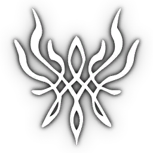
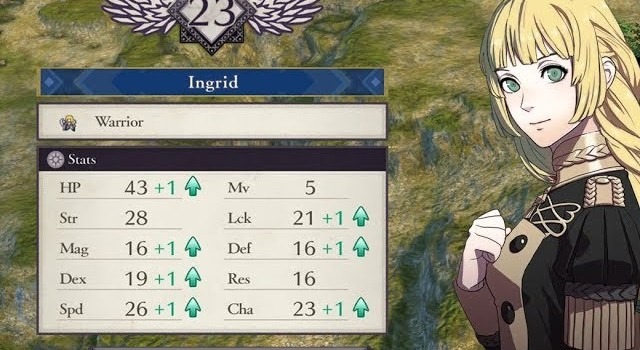

The series in general plays the same way as any RPG execpt you select and move your unit to the target in order to attack.
What makes Three Houses stand out is how it's the most customizible game in the series. This part will be long so I will split it up in catagories to make it easier.
Classes is a easy enough concept to understand. Most units will start off as a commoner or noble. As they get stronger and the more you teach them, they will be able to take an exam for a class. Depending on their class stat level will depend if they can enroll for the class (For example, if you want a unit to be a monk, you need to make sure they have at least a D level in faith or reason). each unit exells to a certain group of classes they want to be. But it requires more motivation if you are trying to make them a class they don't excell at.
Once they unlock a class, they will gain class abilities with some stat changes. If you use the unit in that class after a while they can master the class and unlock an abikiy that can equip any time, regardless of the class. The only limitaton being you can only have 5 equip at a time. But, this can lead to very VERY broken results.
There is five weapon types in this game. Swords, Axe, Bows, Lances, and Brawl. addionally, there is magic attacks. All do their own thing. Swords and lances are good at speed, Axes have high crit chance (X3 damage), bows can hit from far, and brawling has a high chance of attacking up to four times in one turn.
(Note: Some classes can't use some weapons. Most beginner weapon classes can't use magic. And most magic classes can't brawl.)
When in battle or outside of battle, you can sometimes see a heart icon come appear near them. That is a support point. After a bit, you can unlock a support converstation between 2 units. These converstations can vary. It can be about the two experincing everyday life together, or it can be more silly, it can also get serious at times with a unit revealing their character flaw or truama. Supports can make units stronger when close together and depending on the level depends on the stat boost.
Only Byleth gets supports with every single character. There is also four levels of supports, C,B,A and S. the last one is only at the very end of the game while most A supports past B aren't unlocked until part 2 of the story. Supports . It's also the reason why you need to interact with your units instead of train them all the time.

Crests are a superpower of sorts. If a characeter is blood related to a acient figure, it is likely they will end up having a crests. In general, crests have usually a 30% of triggering. This of course goes up the more you level up.

Lastly is Stats, I'll use Ingird for this.
Hp is Health
Strength stands for physical attacks damage
Magic stands for magical attack damage
Dexerity increases your chance of hitting your attack and crit chance
Speed increases the chance of you avoiding an attck
MV or Move is the maximun distance you can move per turn.
Luck can increase the chance of a varity of things.
Defense is for when getting physically hit
Resistence is for when getting magically hit
And (Cha) charm is so useless that I won't bother explaining it!
Fire Emblem is owned by © Nintendo